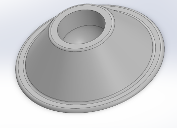
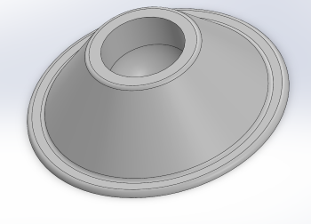
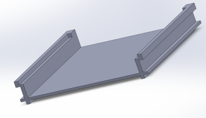
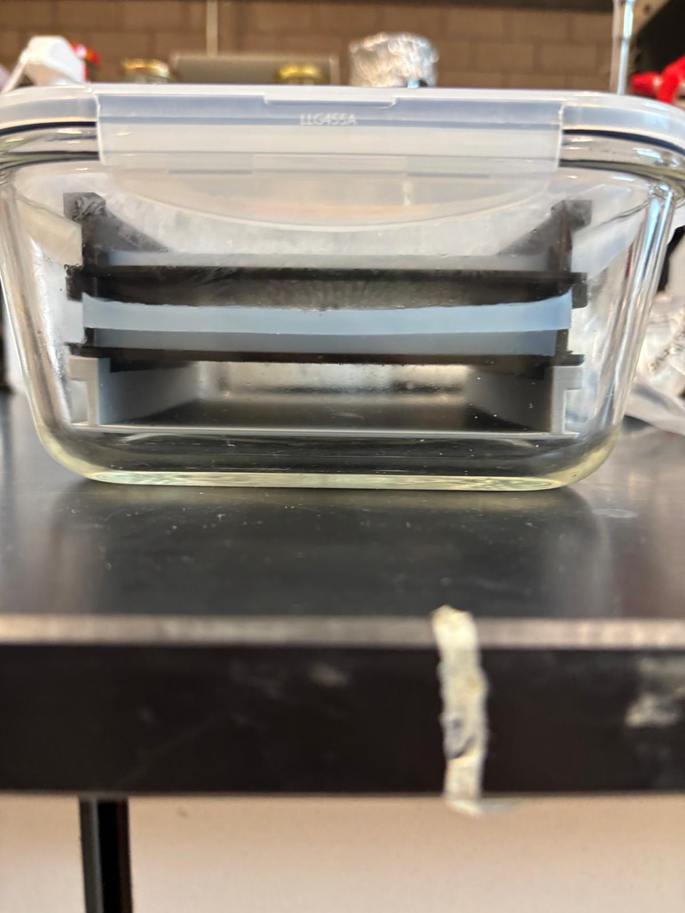
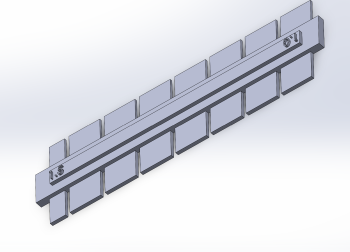
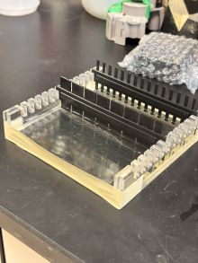

The tube holder was created so that the tubes in the lab can be organised in a neet matter without worrying a mess happening.

To improve the organisation and certain processes made in the bio lab of MetaCycler, my colleague and I worked on 3D models and prints to facilitate lab work that had been brought up by our surpervisor. Below are all our 3D prints and models and what they were used for. The prints allowed for tailor made dimensions and properties that we can continously modify.
The tube holder was created so that the tubes in the lab can be organised in a neet matter without worrying a mess happening.

The gel seen in the second image needed a better way to be organised and stacked, these stacklable trays allow so.
 These combs previously existed in the lab but not with these specific number of teeth or even their thickness. These combs are placed in the gel to created specific holes so that pipettes can be placed. These were created because there was a specific thicknesss and number of teeth desired to speed up their process in the lab and increase efficiency.
 